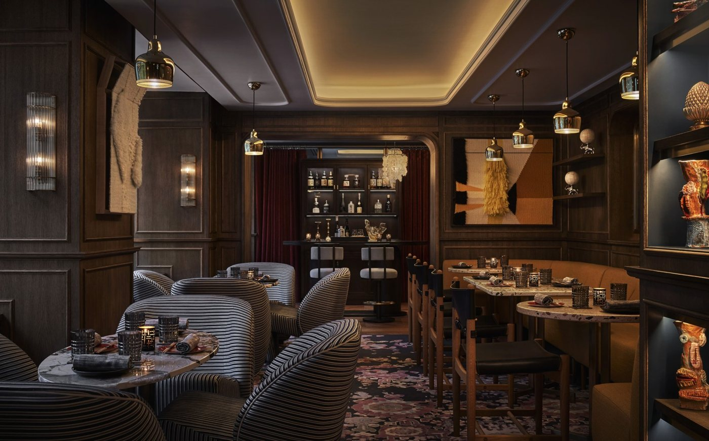

1 / 17 · All
01
Isa
Four Seasons · Calle de Sevilla, 3 · First floor
Worth going for: AvroKO’s theatrical interior pairs velvet seating and low lighting with Asian-inspired cocktails and food. The appeal is an entire evening in a polished, contemporary setting, with enough energy to feel celebratory.
- Reservations
- Available. Booking ahead is strongly recommended for December evenings. Ask specifically about a drinks-only table if dinner is not the plan.
- What to wear
- OpenTable lists smart casual. Tailored trousers or dark jeans, a shirt or knitwear, and polished shoes are practical outfit suggestions.
- When to go
- Regular hours: Sun–Thu 19:00–01:00; Fri–Sat until 02:00. Choose an early sitting for conversation; check the current DJ schedule.
- Worth considering
- A restaurant as well as a bar. The venue publishes a 1h 45m table duration for groups up to four and a 15-minute arrival grace period.
Festive dates: the venue’s Christmas page advertises special dinners on 24 and 31 December. Confirm the applicable year, menu price, deposit and cancellation terms before booking.